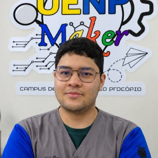
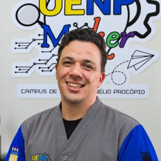
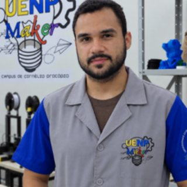
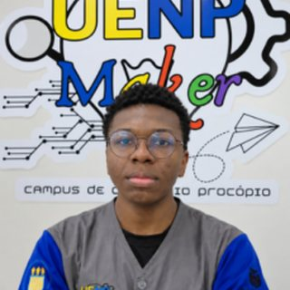
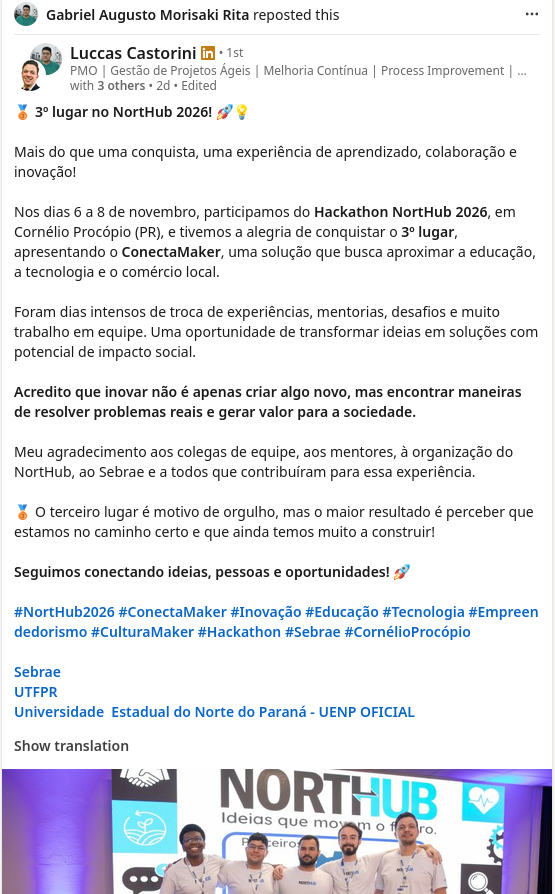

Equipe Makers conquista o 3º lugar no Hackathon NortHub 2026
Entre os dias 6 e 8 de novembro de 2026, a Equipe Makers participou do Hackathon NortHub 2026 em Cornélio Procópio (PR) e conquistou a terceira colocação geral com o projeto ConectaMaker, levando a cultura maker e a inovação tecnológica da UENP para o centro do ecossistema regional.
O Hackathon NortHub
O NortHub é um dos principais eventos de inovação, tecnologia e desenvolvimento regional do Norte do Paraná. Promovido pelo ecossistema Conecta Valley em parceria com o Sebrae/PR, a UTFPR, a prefeitura e instituições de ensino, o evento reúne empreendedores, pesquisadores e a comunidade criativa em busca de soluções para problemas reais da região.
Durante os três dias intensivos de maratona, as equipes enfrentaram rodadas de validação, desafios práticos, mentorias técnicas e desenvolvimento acelerado de protótipos com viabilidade de negócio e impacto social.
A Solução: ConectaMaker
Apresentado pela equipe no palco do evento, o ConectaMaker é uma solução desenvolvida para conectar e aproximar três pilares fundamentais para o desenvolvimento regional: a educação, a tecnologia e o comércio local.
A proposta nasceu da vivência prática que a equipe possui no laboratório maker: inovar não se trata apenas de criar algo tecnicamente novo, mas de encontrar formas viáveis de resolver desafios comunitários, gerar valor para a sociedade e democratizar o acesso às ferramentas de prototipagem e aprendizagem ativa.
Quem é a Equipe Makers
A equipe é composta por estudantes que atuam diariamente nas frentes de pesquisa, atendimento, modelagem 3D, corte a laser e oficinas de extensão no Espaço Maker da UENP:






Agradecimentos e Aprendizados
Mais do que o troféu de 3º lugar, a participação no Hackathon NortHub 2026 reforça o compromisso do Espaço Maker com a formação cidadã, técnica e empreendedora de nossos estudantes.
A equipe estende seus calorosos agradecimentos aos organizadores do NortHub, aos mentores que dedicaram tempo e conhecimento durante o final de semana, ao Sebrae/PR, ao ecossistema Conecta Valley, à UTFPR e à Universidade Estadual do Norte do Paraná (UENP).
Seguimos firmes conectando ideias, pessoas, prototipagem e oportunidades! 🚀